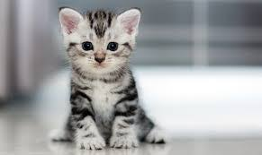

MIS MASCOTAS FAVORITAS

Animales que más me gustan
🐱 Gatos
🐶 Perros
🐰 Conejos
🐹 Hámsters
Cuidados básicos
Dar alimento
Cambiar el agua
Mantener limpio su espacio
Jugar con ellos
Más información
Google
YouTube